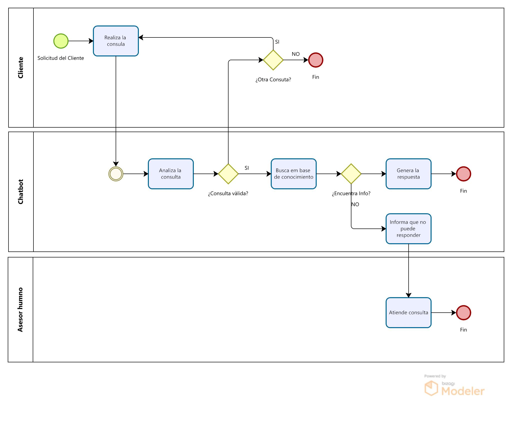

Trabajo Práctico Integrador
Simulación de Proceso de Negocio con BPMN e IA
Integrantes del Grupo:
Juan Pérez, María Rodriguez, Carlos Gomez
Profesor:
Ing. Ricardo Fernandez
Fecha de Entrega:
16 de Junio de 2025
1. Definición del Proceso
El proceso seleccionado para este trabajo es el de "Atención al Cliente para Consultas de Productos", implementado a través de un chatbot en un e-commerce. Este proceso es fundamental para la experiencia del usuario, ya que proporciona respuestas rápidas a las dudas más comunes, mejorando la satisfacción y agilizando el ciclo de venta.
Etapas del Proceso:
- Recepción y Análisis de la Consulta: El cliente inicia la interacción y el chatbot interpreta su solicitud.
- Búsqueda de Información: El sistema busca la respuesta en una base de conocimiento predefinida.
- Entrega de Respuesta: El chatbot proporciona la información solicitada al cliente.
- Verificación y Cierre: Se consulta al cliente si su duda fue resuelta o si necesita más ayuda.
- Escalamiento a un Humano: Si el chatbot no puede resolver la consulta, la transfiere a un asesor de atención al cliente.
2. Diagrama del Proceso (BPMN)
Diagrama de Flujo: Atención al Cliente
Explicación de los Componentes
- Pool y Lanes: El
Poolencapsula todo el proceso. LosLanes(carriles) "Cliente", "Chatbot" y "Asesor Humano" delimitan claramente las responsabilidades de cada participante. - Eventos:
- Evento de Inicio: Marca el comienzo del proceso cuando el cliente envía una consulta.
- Evento de Fin: Indica la finalización del proceso, ya sea porque la consulta fue resuelta o porque fue atendida por un humano.
- Actividades: Los rectángulos representan las tareas o trabajos realizados por cada participante (ej. "Analiza la consulta").
- Compuertas (Gateways): Los rombos representan puntos de decisión. En el diagrama, se evalúa si la consulta es válida y si se encuentra información, bifurcando el camino según el resultado.
- Flujos: Las flechas conectan los elementos en orden, mostrando la dirección del proceso y la comunicación entre los diferentes participantes.
3. Simulación de Interacción con Chatbot
A continuación, se presentan 5 preguntas de prueba para evaluar el funcionamiento del chatbot, junto con las respuestas programadas.
Pregunta 1: ¿Qué modelos de celulares tienen?
Chatbot: ¡Hola! Tenemos una gran variedad de modelos. Los más populares son el "Galaxy Pro", el "Pixel Aura" y el "iPhone Max". ¿Te gustaría saber las especificaciones de alguno en particular?
Pregunta 2: ¿Cuál es el precio del Galaxy Pro?
Chatbot: El "Galaxy Pro" tiene un precio de $850.000 ARS. ¿Querés que te comparta el enlace para verlo en la tienda?
Pregunta 3: ¿Tienen stock del Pixel Aura en color negro?
Chatbot: ¡Sí! Afortunadamente, tenemos stock del "Pixel Aura" en color negro. Está listo para envío inmediato. ¿Te gustaría agregarlo a tu carrito?
Pregunta 4: ¿Qué garantía tiene el iPhone Max?
Chatbot: Todos nuestros productos nuevos, incluyendo el "iPhone Max", cuentan con una garantía oficial de 12 meses directamente con el fabricante.
Pregunta 5: ¿Puedo pagar en 18 cuotas con tarjeta de un banco que no sea de Argentina?
Chatbot: No tengo información específica sobre financiaciones con tarjetas internacionales. Para darte una respuesta precisa, te voy a comunicar con uno de nuestros asesores humanos. Por favor, aguardá un momento.
4. Reflexión Final y Aprendizajes
Dificultades Encontradas
Una de las principales dificultades fue definir el nivel de detalle adecuado para el diagrama BPMN. Es un desafío balancear la simplicidad para que sea comprensible, con la inclusión de todos los pasos y decisiones críticas para que represente fielmente el proceso. Además, prever todas las posibles consultas de los usuarios para la base de conocimiento del chatbot y diseñar un flujo de escalamiento a humanos que sea fluido y no frustrante, representó un reto de planificación importante.
Aprendizajes Obtenidos
Este trabajo nos permitió aplicar de forma práctica los conceptos teóricos de gestión por procesos. Comprendimos la importancia de modelar un proceso antes de intentar automatizarlo, ya que el diagrama BPMN actúa como un mapa fundamental para el desarrollo de software. Aprendimos a utilizar la notación estándar para comunicarnos de manera efectiva y sin ambigüedades sobre los flujos de trabajo. Finalmente, este proyecto nos dio una visión clara de cómo la tecnología, como los chatbots, puede integrarse en los procesos de negocio para mejorar la eficiencia y la satisfacción del cliente, un conocimiento invaluable para nuestra futura carrera como programadores.
5. Enlace al Video Explicativo
En el siguiente enlace se puede encontrar el video explicativo del trabajo, donde detallamos el proceso, el diagrama y la demostración del chatbot.
Ver Video en YouTube